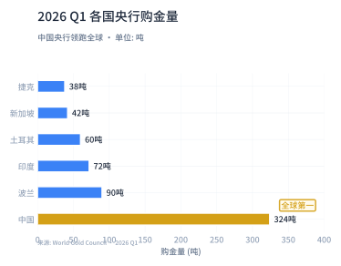

美股高位震荡，英伟达业绩持续炸裂
美股市场近期在高位呈现分化格局。道指与标普500在此前连续数周上涨后，面临技术性回调压力。市场焦点集中在美联储新任主席Kevin Warsh推动的6.8万亿美元缩表计划，30年期国债收益率已攀升至5%以上，为2007年以来最高水平。
科技股核心驱动力依然强劲。英伟达最新财报显示，FY2027 Q1营收达$816亿（同比增长85%），净利润$583亿（同比增长211%），双双超出市场预期。AI芯片需求未见放缓迹象，公司指引下一季度营收继续高增长。

与此同时，伊朗局势持续紧张推高通胀预期。密歇根大学消费者信心指数跌至44.8的历史新低，一年期通胀预期已升至4.8%。市场正经历"资产价格火热"与"实体经济寒意"的极致背离。
A股科技赛道回调后，机构逆势密集加仓调研
上周A股市场整体承压，主要指数普遍回调。上证指数下跌2.04%，深证成指跌2.07%，科创综指跌幅最大达4.42%。半导体板块遭遇287亿资金净流出，白酒、银行等防御性板块获得小幅资金流入。

然而，科技赛道的机构关注度不降反升。Wind数据显示，二季度以来公募基金与外资机构合计调研频次分别突破1.2万次和1400次，AI算力硬件、半导体设备及高端医疗装备成为调研密度最高的领域。险资今年以来调研A股公司5723次，硬科技是绝对主线。
与此同时，年内已有超过500家私募基金管理人被注销登记，"劣币"加速出清。分析人士认为，行业生态优化将利好合规能力强、投研实力雄厚的头部机构。公募机构参与A股定增热情高涨，年内获配金额已超282亿元，电子行业成为布局重点。

河南"十五五"规划发布，太空光伏与商业航天站上风口
《河南省国民经济和社会发展第十五个五年规划纲要》正式发布，提出实施"做强做优做大数字经济行动"，培育壮大人工智能、商业航天等特色产业。规划明确要加快中原量子谷、卫星产业园区等产业基地建设，打造全球重要的智能终端产业基地。
在更广阔的产业层面，国金证券最新研报指出，太空光伏已进入"通信奠基、算力启航"的高速增长期。柔性太阳翼渗透率快速提升，航天级辅材成为产业链关键瓶颈与高盈利环节。建议围绕导电浆料、UTG/CPI盖板、空间级封装胶粘材料、高可靠性互联材料四大主线布局。
此外，AI数据中心（AIDC）带来的新型电力设备需求成为机构关注度最高的话题之一。5月份以来已有42家电力设备行业A股公司接待机构调研，覆盖储能、变压器、充电桩、电源设备等多个细分领域。
Oura秘密提交IPO、董秘新规施行、FMG高层变动
智能戒指巨头赴美上市：智能可穿戴设备制造商Oura已在美国秘密提交IPO申请。过去两个财年总营收实现四倍增长，全球已售出超过550万枚智能戒指，覆盖4600多个零售网点。Oura Ring主要监测睡眠、日常活动和健康指标，提供个性化健康洞察。
董秘监管新规正式施行：5月24日起，《上市公司董事会秘书监管规则》正式施行，明确要求董秘不得兼任财务负责人、总经理等职。目前A股董秘兼任财务总监的公司超800家，兼任总经理的超100家，近千家公司需在2027年底前完成专职化调整。近一个月已有30余家公司发布董秘辞任公告。
FMG董事会变动：澳大利亚矿业巨头福特斯克金属集团（FMG）宣布，前CEO伊丽莎白·盖恩斯辞去执行董事一职，6月30日生效。盖恩斯曾于2018-2022年担任CEO，是矿业界最具影响力的女性高管之一。
黄金冲破$4,546历史新高，央行连续18个月增持
COMEX黄金期货价格突破$4,546/盎司，再创历史新高。本轮金价上涨的核心驱动力来自三方面：全球央行持续大规模购金、地缘政治风险溢价（伊朗局势）、以及美元信用体系的结构性松动。

中国人民银行4月再度增持8.09吨黄金，总储备达到2,321.56吨，实现连续18个月增持。2026年Q1，中国央行以324吨的购金量位居全球第一，远超波兰（90吨）和印度（72吨）。新兴市场央行"去美元化"购金浪潮仍在加速。

原油方面，WTI价格在5月21日大跌5.66%至$98.26/桶，为近期最大单日跌幅。市场在伊朗供应中断风险与全球经济放缓担忧之间反复博弈。油价波动率显著上升，后续走势高度依赖中东局势演变。

AI后市研判现分歧：新基金发行火热 vs 估值压力隐现
科技主题新基金发行市场持续升温。公募排排网数据显示，5月18日至24日全市场共有47只新基金开启募集，连续三周环比增长，AI、机器人、半导体成为基金公司重点布局方向。
但随着相关板块前期涨幅较大，市场对AI后市走势的判断开始出现明显分歧：
🟢 看多方：全球资本开支扩张周期叠加自主可控逻辑，AI产业链景气度有望持续。英伟达Q1营收816亿美元验证了需求端的强劲。内外资机构调研数据显示，AI算力硬件仍是机构最密集布局的方向。
🔴 谨慎方：板块估值已处于相对高位，短期面临高位震荡和业绩验证压力。中信建投提示，随着AI从训练走向大规模推理应用，部分前期概念炒作标的可能面临业绩兑现风险。
中信建投证券同时建议2026年加配医疗器械板块——受耗材集采、医疗合规要求提升等因素影响，器械板块经历了持续调整，随着政策影响逐步出清，有望迎来估值与业绩双修复。此外，2026年ASCO年会94项中国研究中选口头报告，依沃西单抗登上全体大会，标志着中国创新药全球学术影响力迈上新台阶。
🔊 音频文件：将在正式发布时生成。
🏷️ 本期核心标签
⚠️ 数据核查说明
本文主要数据来源：(1) 英伟达FY2027 Q1财报数据（营收$816亿/净利润$583亿）来自公司官方公告；(2) 黄金COMEX价格$4,546及央行购金数据来自WGC和中国人民银行；(3) A股指数涨跌幅及资金流向来自Wind和东方财富；(4) 机构调研数据来自公募排排网、Wind及证券日报；(5) 产业政策及公司新闻来自36氪、中证报、上证报等权威媒体。部分前瞻性判断（如AI后市分歧、太空光伏前景等）基于券商研报观点，仅供参考。本文为生产测试版本。